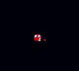
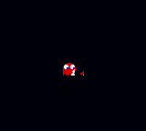

Pac-Man Vs. GBC (Pac-Man: Special Color Edition Hack)
This hack changes a portion of the sprites to the ones from the GBA portions of Pac-Man Vs., including custom sprites for the intermissions. The half size maze is unaltered.
Note: You will need to patch a Pac-Man: Special Color Edition ROM using Flips in order to play the hack.
 

 .bps patch file (1.25 KB)
.bps patch file (1.25 KB)